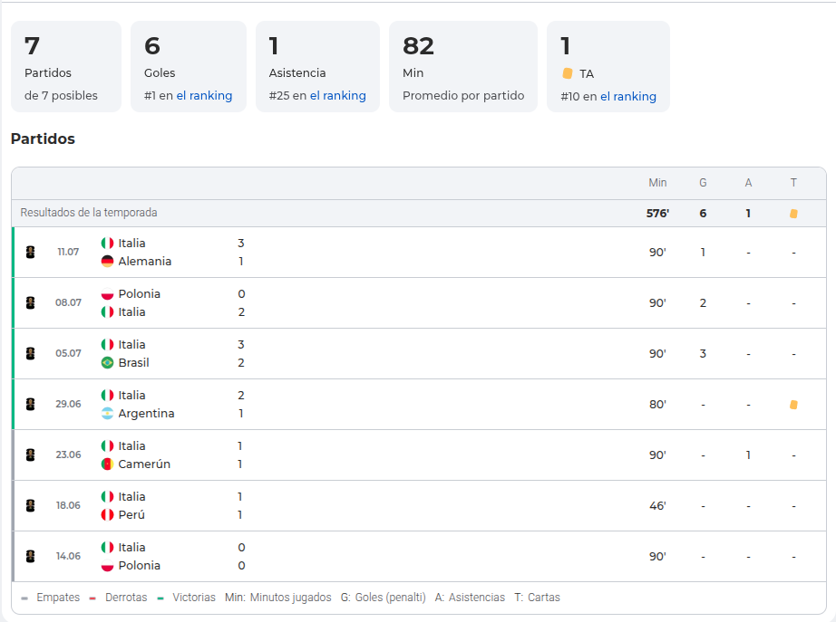
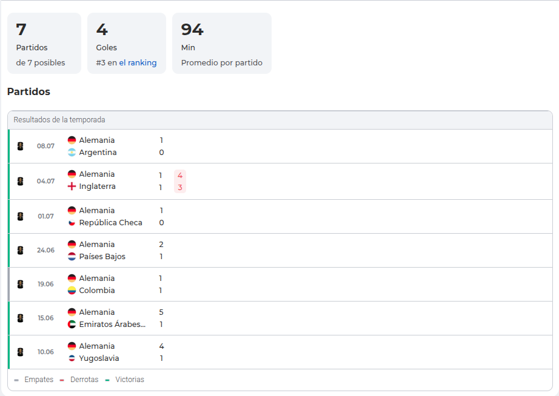
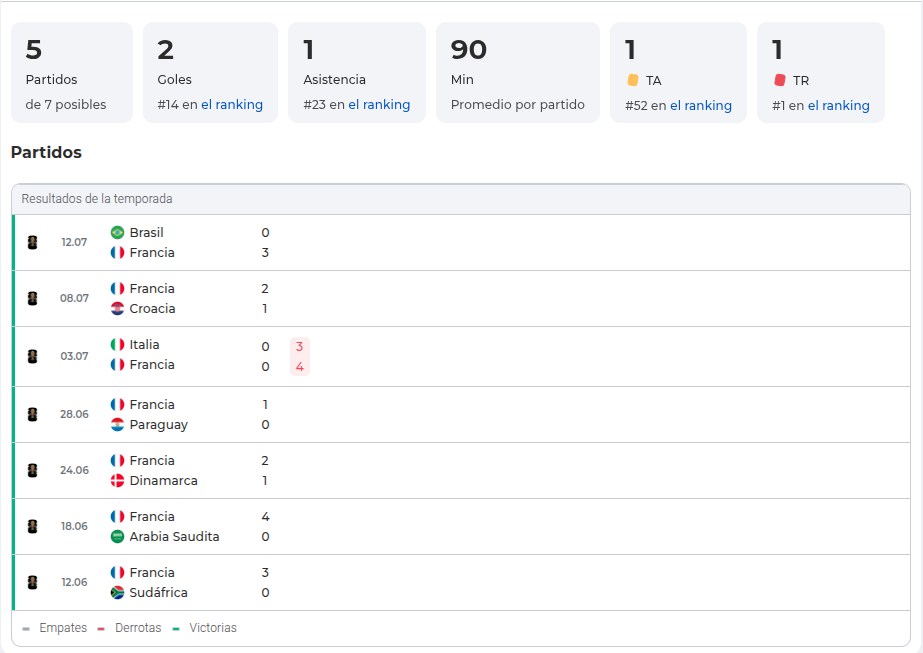
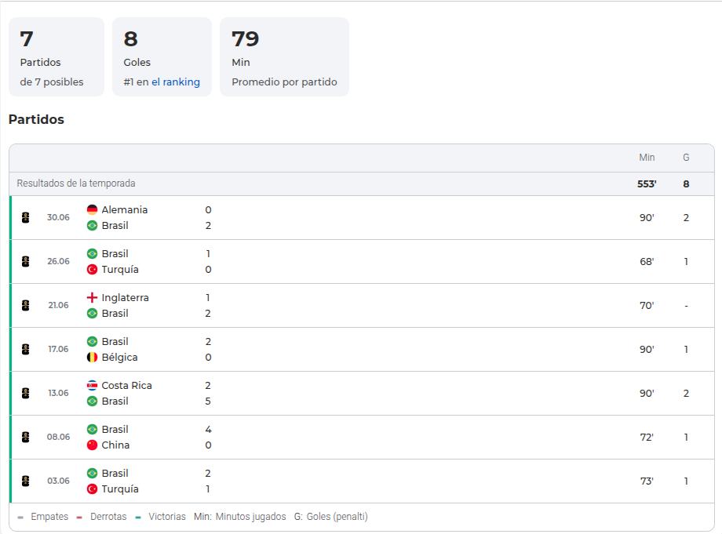
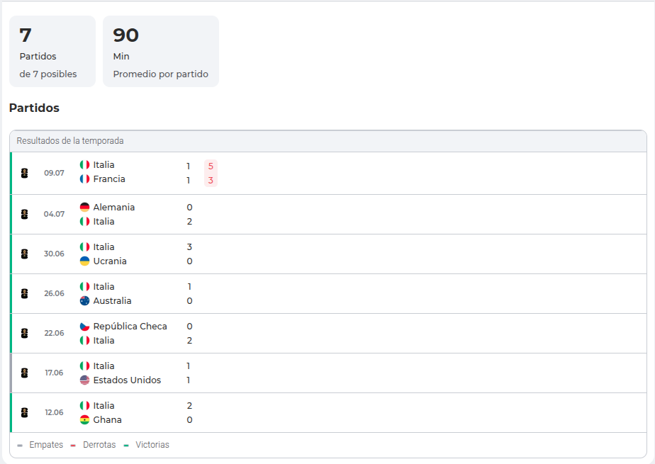
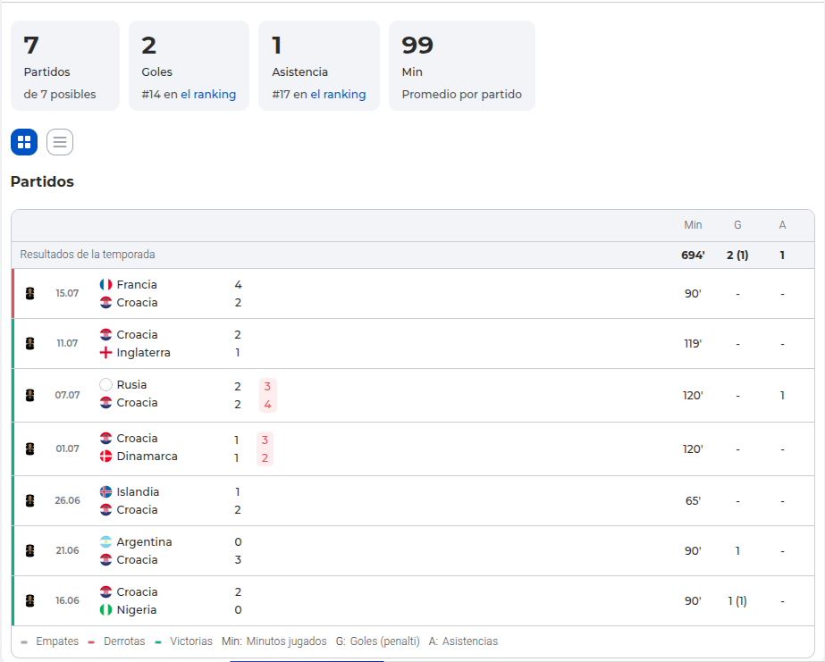
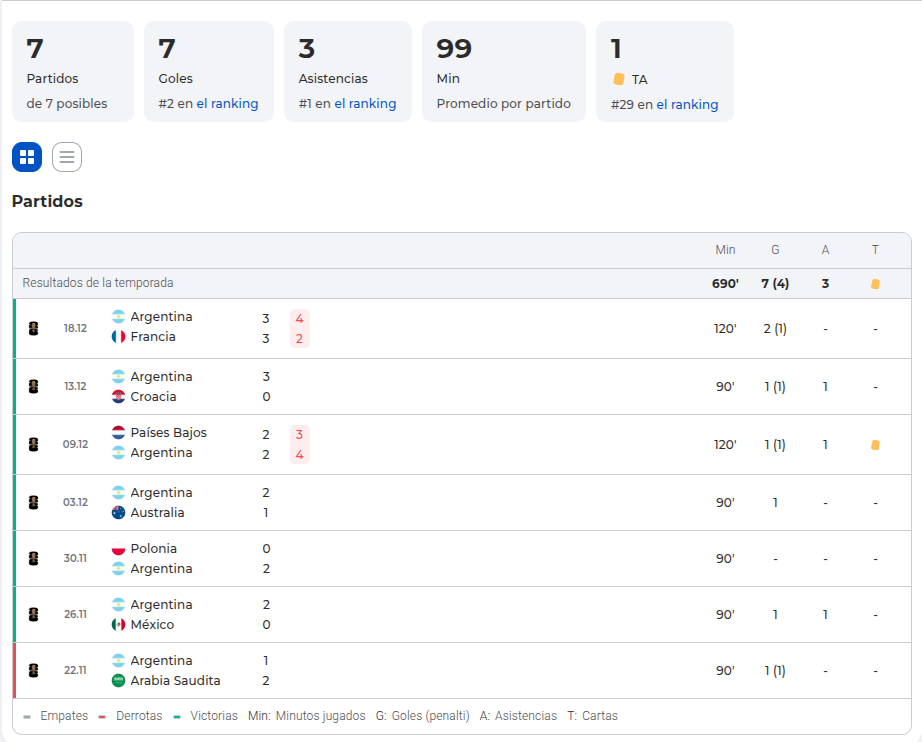

Balón de oro en año de Mundial
Peso del torneo
El Mundial pesa mucho en el balon de oro ya que es la mayor competición del mundo del futbol, el cual paraliza en mundo porque esta competición recoje a los mejores jugadores de cada país solo cada 4 años, todo futbolista profesional sueña con ganar esta competición representando a su país.
Ganadores del Balón de oro gracias a su gran Mundial
Existen varios jugadores que ganaron el mayor premio individual del futbol gracias al Mundial que hicieron, estes son:
- En 1982 Paolo Rossi con Italia con estas estadísticas en el Mundial.

- En 1990 Lothar Matthäus con Alemania con estas estadísticas en el Mundial.

- En 1998 Zidane con Francia con estas estadísticas en el Mundial.

- En 2002 Ronaldo Nazario con Brasil con estas estadísticas en el Mundial.

- En 2006 Cannavaro con Italia con estas estadísticas en el Mundial.

- En 2018 Modric con Croacia aunque fué subcampeon dejó estas estadísticas en el Mundial.

- En 2022 Lionel Messi con Argentina con estas estadísticas en el Mundial.

Posibles ganadores este año con peso en el Mundial
- Lamine Yamal, ganando el Mundial
- Rodri Hernandez, ganando el Mundial y el mejor jugador del torneo
- Lionel Messi, a sus 39 años subcampeon y 2º máximo goleador
- Mbappe, máximo goleador del torneo